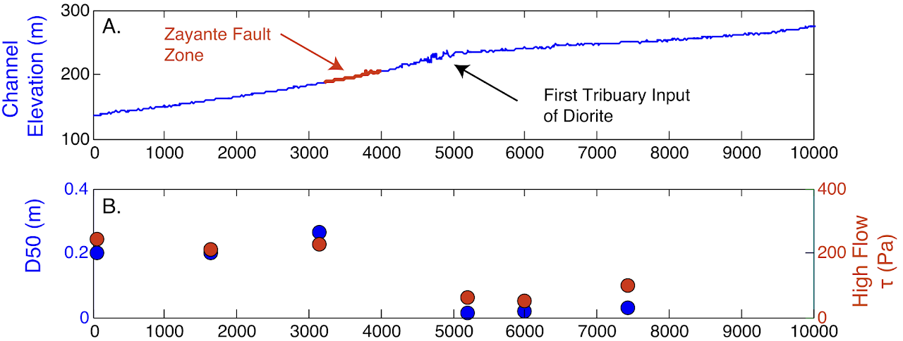
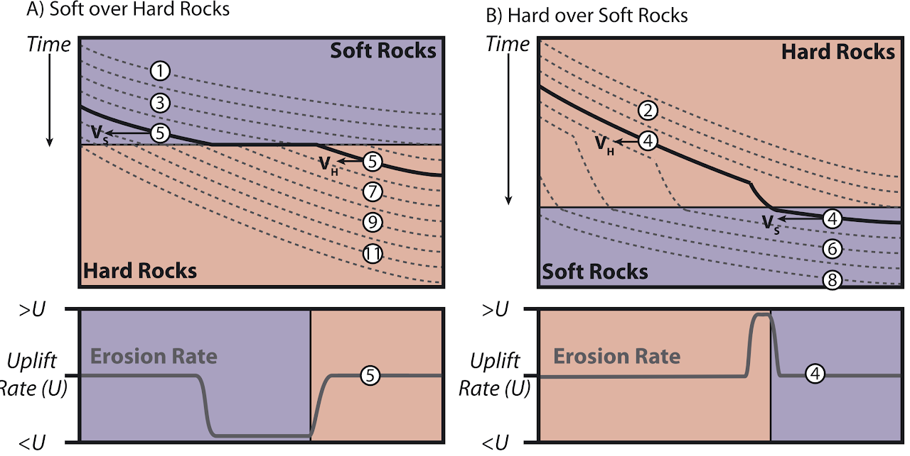
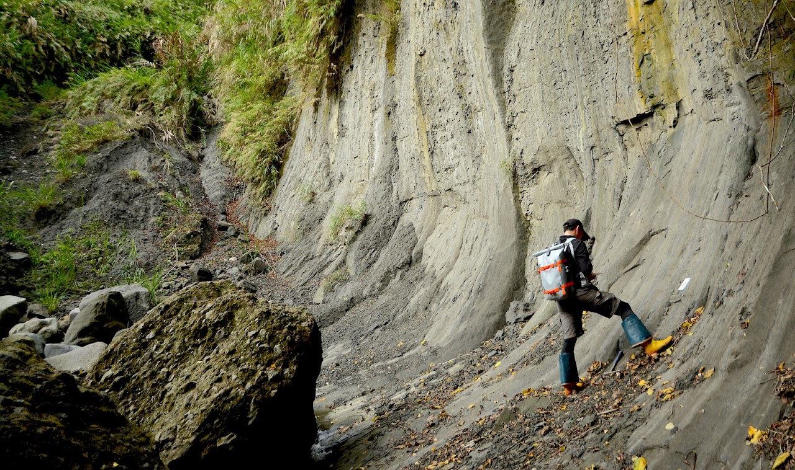

Bedrock and sediment controls on rapidly eroding fluvial landscapes

“The recognition that Earth’s surface topography evolves over time provides a basis for reconstructing past tectonic or climatic processes, as well as the formation of sedimentary sequences.” — Willett et al. (2014)
Orogenic landscape is graphically modulated by bedrock-channel incision in response to dynamic tectonic activities. The stream-power incision model has successfully predicted rates and patterns of bedrock-channel incision in active mountain ranges with homogeneous rock type. However, contrasts in bedrock strength are common in orogenic settings, yet the effect of bedrock lithology on the evolution of fluvial landscapes remains poorly understood. Is the landscape governed by coarse bedload derived from rigid bedrock that increases the downstream abrasion (Finnegan et al., 2017)? Or is it a state of temporary equilibrium controlled by the geometric structure of underlying lithology with diverse resistances against the incision (Forte et al., 2016)? Does the spatially variable uplift matter in this setting?


Eastern Taiwan — Coastal Range
The Coastal Range in the eastern Taiwan orogen is a young (<1 Ma) active mountain range characterized by local upland areas of relict terrain (high-elevation, low-relief surfaces covered by lateritic soils) surrounded by deeply incised river catchments with rapidly uplifted (~2–17 mm/yr) resistant volcanic basement and weak sedimentary rocks. Annual precipitation is ~1.8–2.5 m, distributed uniformly throughout the range, suggesting negligible climate control on variations in river channel morphology. It provides an excellent natural laboratory to explore the interplay between bedrock variability, uplift pattern, and fluvial processes. Yet the susceptibility, timing, and pace of landscape adjustments in response to these factors have not been clearly assessed. To address these questions, this study will conduct an integrated field-based and numerical analysis of the Coastal Range, including:
- Quantitative analysis applying bedrock-incision models to longitudinal river profiles extracted from a DEM.
- Field measurements of channel shape and bedload grain size to constrain model parameters.
- Compilation of published ages of fluvial and marine terraces to define millennial uplift and incision patterns.
- Geological mapping and structural analysis to investigate the spatial variations of underlying lithologies and the cumulative uplift field.
- Estimating the overall timescale of the modern fluvial system by dating relict terrains with cosmogenic nuclide analysis of old bedrock surfaces or paleomagnetic measurements on lateritic soils.
The results of this research are expected to document the bedrock controls on river channel morphology, which will improve our understanding of fluvial processes that govern landscape evolution in active orogens.

Related publications
- Lai, L.S.-H., Roering, J.J., Finnegan, N.J., Dorsey, R.J., Yen, J.-Y., 2021. Coarse sediment supply sets the slope of bedrock channels in rapidly uplifting terrain: Field and topographic evidence from eastern Taiwan. Earth Surface Processes and Landforms 46, 2671–2689. https://doi.org/10.1002/esp.5200
Other references
- Finnegan, N.J., Klier, R.A., Johnstone, S., Pfeiffer, A.M., and Johnson, K. (2017) Field evidence for the control of grain size and sediment supply on steady-state bedrock river channel slopes in a tectonically active setting. Earth Surface Processes and Landforms, 42(14), p. 2338–2349.
- Forte, A.M., Yanites, B.J., and Whipple, K.X. (2016) Complexities of landscape evolution during incision through layered stratigraphy with contrasts in rock strength. Earth Surface Processes and Landforms, 41(12), p. 1736–1757.
- Willett, S.D., McCoy, S.W., Perron, J.T., Goren, L., and Chen, C.-Y. (2014) Dynamic reorganization of river basins. Science, 343(6175).